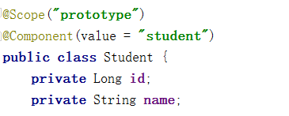
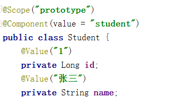
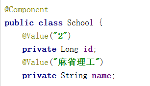
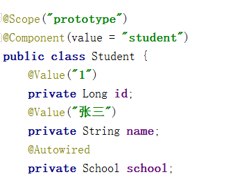
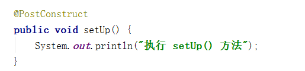

概述
截止目前为止，咱们 Bean 的装配方式是通过代码 getBean() 的方式从容器获取指定的 Bean 实例，容器首先会调用 Bean 类的无参构造器，创建空值的实例对象。除了使用 getBean() 的装配方式外，还可以使用注解的装配方式。
容器中 Bean 的作用域
在学习 Bean 的装配方式之前，我们先了解一下 Bean 的作用域。当通过 Spring 容器创建一个 Bean 实例时，不仅可以完成 Bean 的实例化，还可以通过 scope 属性，为 Bean 指定特定的作用域。Spring 支持 5 种作用域。
singleton：单态模式。即在整个 Spring 容器中，使用 singleton 定义的 Bean 将是单例的，只有一个实例。默认为单态的。prototype：原型模式。即每次使用 getBean 方法获取的同一个的实例都是一个新的实例。 request：对于每次 HTTP 请求，都将会产生一个不同的 Bean 实例。session：对于每个不同的 HTTP session，都将产生一个不同的 Bean 实例。global session：每个全局的 HTTP session 对应一个 Bean 实例。典型情况下，仅在使用 portlet 集群时有效，多个 Web 应用共享一个 session。一般应用中，global-session 与 session 是等同的。
注意事项：
- 对于 scope 的值 request、session 与 global session，只有在 Web 应用中使用 Spring 时，该作用域才有效。
- 对于 scope 为 singleton 的单例模式，该 Bean 是在容器被创建时即被装配好了。
- 对于 scope 为 prototype 的原型模式，Bean 实例是在代码中使用该 Bean 实例时才进行装配的。
基于注解的装配方式
对于 DI 使用注解，将不再需要在 Spring 配置文件中声明 Bean 实例。Spring 中使用注解， 需要在原有 Spring 运行环境基础上再做一些改变
需要在 Spring 配置文件中配置组件扫描器，用于在指定的基本包中扫描注解。
1 |
|
@Component
需要在类上使用注解 @Component，该注解的 value 属性用于指定该 bean 的 id 值。
1 |
|
Spring 还提供了 3 个功能基本和 @Component 等效的注解：
@Repository：用于对 DAO 实现类进行注解@Service：用于对 Service 实现类进行注解@Controller：用于对 Controller 实现类进行注解
@Scope
需要在类上使用注解 @Scope，其 value 属性用于指定作用域。默认为 singleton。

@Value
需要在属性上使用注解 @Value，该注解的 value 属性用于指定要注入的值。

使用该注解完成属性注入时，类中无需 setter。当然，若属性有 setter，则也可将其加到 setter 上。
@Autowired
需要在域属性上使用注解 @Autowired，该注解默认使用 按类型自动装配 Bean 的方式。
使用该注解完成属性注入时，类中无需 setter。当然，若属性有 setter，则也可将其加到 setter 上。


@Resource
需要在域属性上使用注解 @Resource，该注解有一个 name 属性，可以创建指定的 bean
1 |
|
@PostConstruct
在方法上使用 @PostConstruct 相当于初始化

注解与 XML 配置的区别
注解的好处是，配置方便，直观。但其弊端也显而易见：以硬编码的方式写入到了 Java 代码中，其修改是需要重新编译代码的。
XML 配置方式的最大好处是，对其所做修改，无需编译代码，只需重启服务器即可将新的配置加载。
若注解与 XML 同用，XML 的优先级要高于注解。这样做的好处是，需要对某个 Bean 做修改，只需修改配置文件即可。
If you like this blog or find it useful for you, you are welcome to comment on it. You are also welcome to share this blog, so that more people can participate in it. If the images used in the blog infringe your copyright, please contact the author to delete them. Thank you !